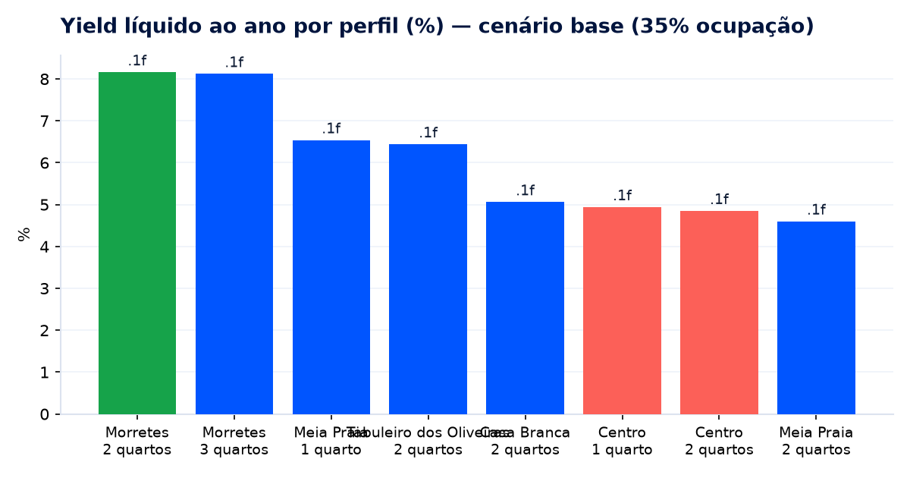
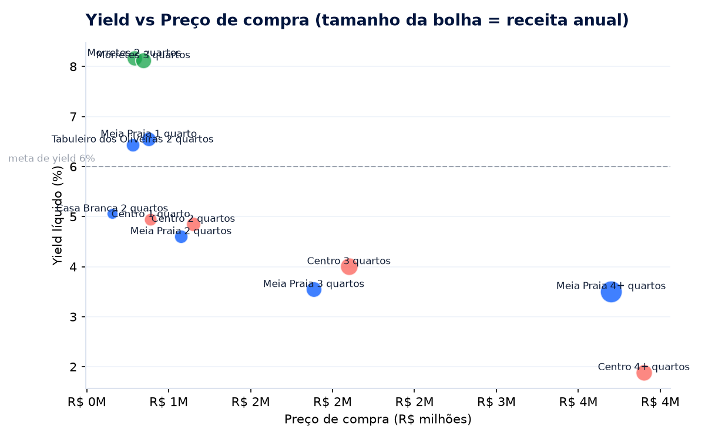
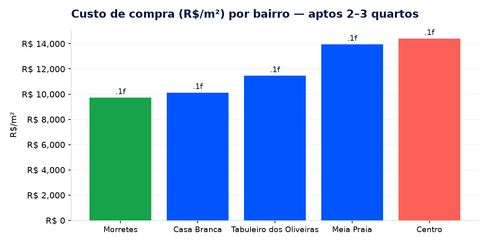
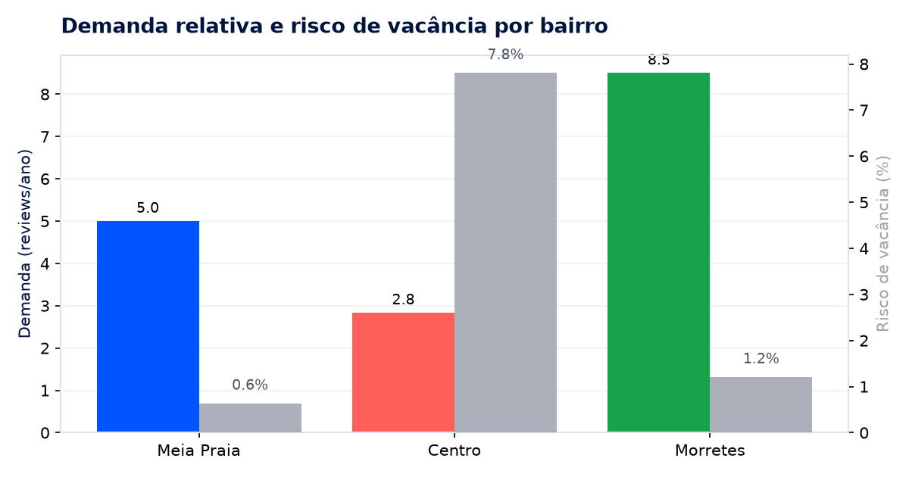
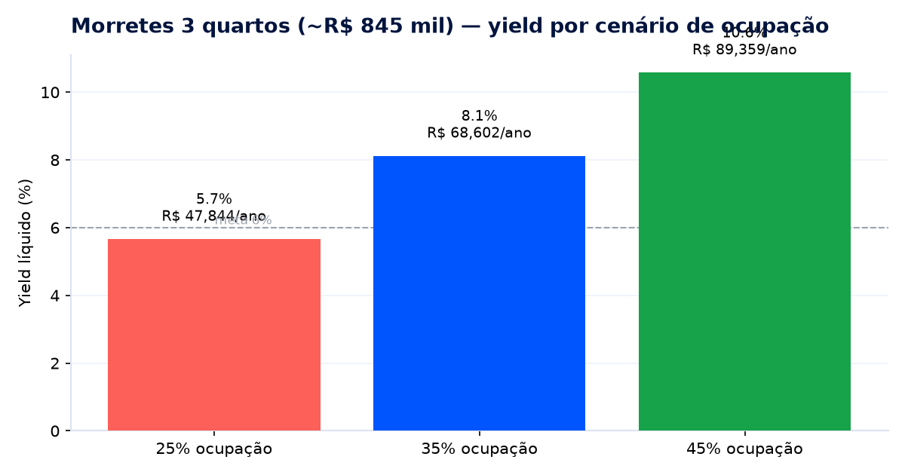
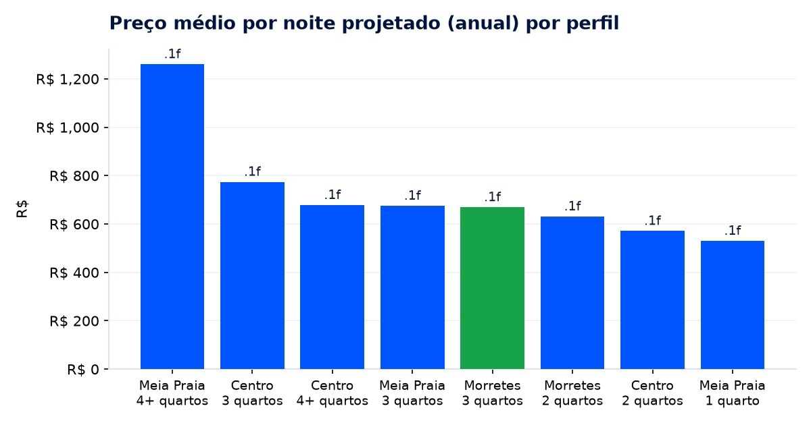

Análise dos dados de Airbnb e VivaReal para a decisão da Seazone. Critério principal: yield líquido anual (retorno sobre o preço de compra).


| Perfil | Preço compra (mediana) | Receita líquida/ano | Yield líquido | Demanda (rev/ano) | Risco vacância |
|---|---|---|---|---|---|
| Morretes · 2 quartos | R$ 790 mil | R$ 64,5 mil | 8,2% | 8,5 | 1,2% |
| Morretes · 3 quartos | R$ 845 mil | R$ 68,6 mil | 8,1% | 8,5 | 1,2% |
| Meia Praia · 1 quarto | R$ 878 mil | R$ 57,4 mil | 6,5% | 5,0 | 0,6% |
| Tabuleiro dos Oliveiras · 2q | R$ 780 mil | R$ 50,2 mil | 6,4% | 6,1 | 5,0% |
| Casa Branca · 2 quartos | R$ 655 mil | R$ 33,1 mil | 5,1% | 6,3 | 0,0% |
| Centro · 1 quarto (TESE) | R$ 890 mil | R$ 44,0 mil | 4,9% | 2,8 | 7,8% |
| Centro · 2 quartos | R$ 1,15 M | R$ 55,8 mil | 4,9% | 2,8 | 7,8% |
| Meia Praia · 4+ quartos | R$ 3,7 M | R$ 129,7 mil | 3,5% | 5,0 | 0,6% |
Morretes entrega o maior retorno por real investido. Imóveis grandes da orla geram mais receita absoluta, mas o preço de compra (R$ 3–5 M) derruba o yield para ~3,5%.


| Bairro | Custo compra (R$/m² — 2 a 3q) | Receita bruta/ano (base) | Demanda (rev/ano) | Risco de vacância |
|---|---|---|---|---|
| Morretes | ~R$ 8–11 mil | R$ 80–85 mil | 8,5 | 1,2% |
| Meia Praia | ~R$ 13–15 mil | R$ 65–161 mil | 5,0 | 0,6% |
| Tabuleiro dos Oliveiras | ~R$ 11 mil | R$ 59 mil | 6,1 | 5,0% |
| Centro | ~R$ 13–17 mil | R$ 58–99 mil | 2,8 | 7,8% |
Centro é o bairro de maior custo por m², com baixa demanda e alta ociosidade — o oposto de uma aposta eficiente. Morretes concentra o que interessa: barato por m², com demanda e ocupação saudáveis.


| Cenário | Ocupação | Receita bruta/ano | Custos fixos | Taxa gestão (15%) | Receita líquida/ano | Yield líquido | Payback |
|---|---|---|---|---|---|---|---|
| Conservador | 25% | R$ 61,1 mil | R$ 4,05 mil | R$ 9,2 mil | R$ 47,8 mil | 5,7% | 17,7 anos |
| Base | 35% | R$ 85,5 mil | R$ 4,05 mil | R$ 12,8 mil | R$ 68,6 mil | 8,1% | 12,3 anos |
| Otimista | 45% | R$ 109,9 mil | R$ 4,05 mil | R$ 16,5 mil | R$ 89,4 mil | 10,6% | 9,5 anos |
Mesmo no cenário mais conservador (25% de ocupação) o ativo ainda entrega ~5,7% — sem prejuízo operacional. Defesa da decisão no relatorio.md.